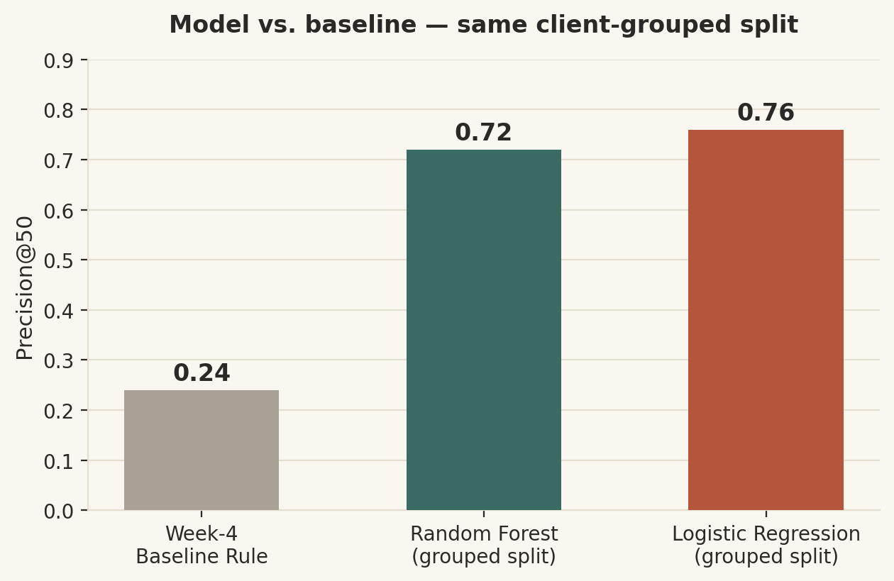
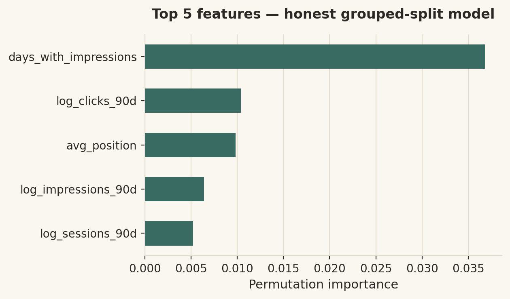
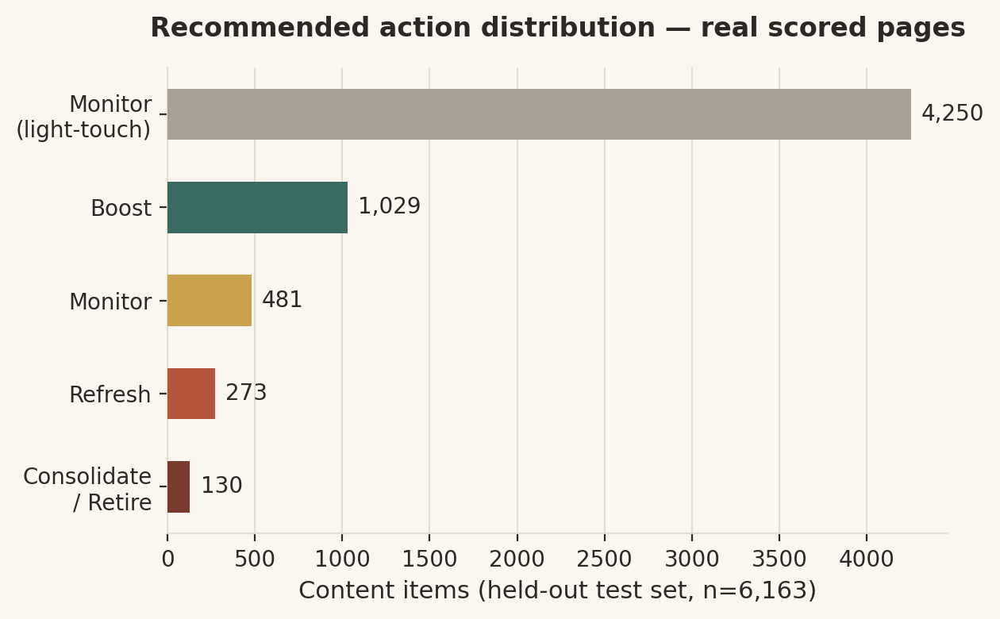

Finding which content to refresh first — and proving the model actually beats a simple rule at it.
Content teams can't manually review every page, so the question this project asks is: which pages should be refreshed first, and can a model beat a simple hand-written rule at picking the ones that are genuinely declining? The approach builds 90-day traffic and engagement features from an anonymized slice of FlyRank's content dataset (30,000 pages, 32 clients), trains a logistic regression and a random forest against a transparent baseline rule, and validates with a client-grouped train/test split so no client's pages leak across the split. Under this honest split, the best model reaches Precision@50 of 0.72–0.76, versus the baseline rule's 0.24 — roughly a 3× lift — after a leakage check showed a naive random split had inflated the same model's score to 0.96 purely by memorizing per-client traffic patterns. The features that actually drive the ranking are recency signals like impression and session activity, not the label-adjacent trend fields, which were deliberately excluded. The output is a ranked action queue with reason codes that flags roughly 30% of content for mandatory human review, built as a prioritization aid, not an autonomous decision-maker.
Content teams sit on thousands of pages and can't manually audit all of them every week. The decision this project supports is: given a page's traffic, engagement, and metadata signals, which pages are declining and should be reviewed for refresh first — and is a learned score actually better than a simple, explainable rule at making that call?
The unit of analysis is a single content page. The output is a ranked queue with a suggested action and a reason code. The action a human takes from it is picking what to review first in a weekly planning cycle. Getting this wrong is costly in both directions: refreshing healthy content wastes editorial time, while missing a genuinely declining page means it keeps losing traffic unnoticed. Data/ML helps here because "declining" isn't visible from any single metric — it's a pattern across traffic, engagement, and content-age signals that a hand rule can only approximate.
data/raw/content_refresh_anonymized.csv, processed into a 30,000-row × 52-column feature vector by scripts/01_prepare_features.py.client_id / content_id are pseudonymous, used only for grouping the split, never as model features.log_impressions_90d, log_clicks_90d, log_sessions_90d, log_ai_sessions_90d), plus content_age_days and days_since_last_update.is_declining_label = (trend_direction == "down").trend_direction and trend_pct — both label-derived and a direct leakage risk (proven in Section 3).DATA_USE.md.
A transparent, hand-written "fix this first" rule (Week 4) using visible signals only — no learned weights. It scores Precision@50 = 0.24.
Logistic Regression and Random Forest on the numeric + categorical feature set: search volume, competition, CPC, word/char count, 90-day log-traffic features, content age, update recency, CTR, average position, and engagement-recency features.
A client-grouped GroupShuffleSplit holding out ~20% of clients, not rows — no client's pages appear in both train and test.
trend_direction / trend_pct are absent from the feature set.trend_pct as a feature pushed Precision@50 from ~0.72 toward 1.00 — proof the validation harness catches a real leak.
| Model | Precision@50 | Lift vs. baseline |
|---|---|---|
| Week-4 Baseline (hand rule) | 0.24 | 1.0× |
| Random Forest (grouped split) | 0.72 | 3.0× |
| Logistic Regression (grouped split) | 0.76 | 3.17× |
| (random row split — not the reported result) | 0.96 | inflated by leakage |
Best model: Logistic Regression. Accuracy 0.57; precision 0.56 (not-declining) / 0.59 (declining); recall 0.62 / 0.53. Top-50 error analysis: 12/50 false positives, 9 of those tied to a single client — the model still over-indexes somewhat on client-level traffic even after grouping.

Built directly on this model's own held-out scores (6,163 real test-set pages, client-grouped split) — real content_age_days, days_since_last_update, and 30-day traffic change per page, not synthetic data.

| Action | Count | Share |
|---|---|---|
| Monitor (light-touch) | 4,250 | 69.0% |
| Boost | 1,029 | 16.7% |
| Monitor | 481 | 7.8% |
| Refresh | 273 | 4.4% |
| Consolidate / Retire | 130 | 2.1% |
Each action carries a reason code so a reviewer can see why — e.g. RC01 = high decay score (≥0.6) + traffic down >10% → time-sensitive refresh; RC02 = traffic up >20% → boost the momentum; RC04 = old, low-traffic, high-decay → consolidation candidate.
Refresh and Consolidate/Retire call, plus any borderline prediction near the decision boundary, is flagged for review. This is a prioritization aid — it never auto-publishes, auto-edits, or auto-deletes anything.
To re-run this work from a fresh clone:
git clone https://github.com/ramanchauhan2271-dev/flyrank-ml-internship
cd flyrank-ml-internship
pip install -r requirements.txt
python scripts/01_prepare_features.py
python scripts/02_baseline_score.py
Then open work/notebooks/capstone.ipynb and Run All — it reproduces the full pipeline end
to end (feature build → client-grouped split → baseline vs. model → leakage check → error analysis →
ranked recommendations) on the same bundled anonymized sample, with a fixed random_state=42
throughout. The three weekly notebooks behind it — w05_model.ipynb,
w06_validation_audit.ipynb, w07_action_playbook.ipynb — carry the intermediate
work this capstone consolidates. Exact numbers can shift a little with library versions; the ~3× lift
over baseline is the stable claim.
Built on the FlyRank ML Internship dataset — flyrank.ai. Thanks to Mirza Ašćerić (Director of AI Development) and the FlyRank ML track for the structured assignments and live sessions this capstone builds on.